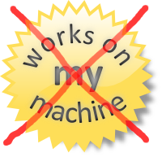
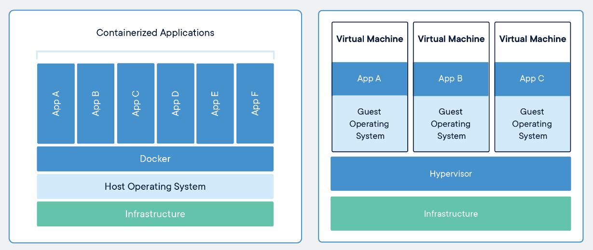

## Docker - What is it and how to use it? By Christian Fosli
## So what is docker? A tool that lets us *package* and *run* an application in an isolated environment ("container")
## Why do we want that? * Consistent * Scalable * I can run a lot of tools locally without installing them 
## How are containers different from VM's?  <small>Image from "Docker and Kubernetes: The Big Picture" pluralsight course. ©Pluralsight LLC</small>
## Docker Architecture <img src="images/docker_architecture.svg"/> <small>Image from docs.docker.com ©Docker Inc</small>
## Containers vs Images * Similar to class vs instance from OOP * `docker build`: Dockerfile → Image * `docker run`: Image → Container
### Bonus info It's not actually called "Docker" images anymore.
## The Dockerfile Tells Docker how to take your source code and build an image out of it. ```docker FROM <base-image> WORKDIR /app COPY . . RUN <build-command> ENTRYPOINT ["myapp"] ```
#### Leverage build cache for faster builds ```docker [|3-4|5-7] FROM node:lts AS build WORKDIR /usr/src/app COPY package.json package-lock.json ./ RUN npm install COPY . . EXPOSE 80 CMD ["node", "server.js"] ```
#### Multi-stage builds keep images small ```docker [1-6|1,6,8,10|8-11] FROM mcr.microsoft.com/dotnet/sdk:5.0 AS build WORKDIR /src COPY *.csproj . RUN dotnet restore COPY . . RUN dotnet publish -c Release -o /app/publish FROM mcr.microsoft.com/dotnet/aspnet:5.0 WORKDIR /app COPY --from=build /app/publish . ENTRYPOINT ["dotnet", "MyApp.dll"] ```
Demo: Write a dockerfile for a rust application
## Demo * `docker build` * `docker images` * `docker run` * `docker ps`
## Docker run examples ```console # Quickly create an isolated linux environment docker run --rm -it alpine # Run CLI tool on a local file docker run --rm -v "$(pwd):/work" tmknom/prettier myfile.js # Azure CLI (minimal alpine image) docker run --rm -it mcr.microsoft.com/azure-cli # Azure CloudShell (big but with many tools!) # and mount current directory to /work in the container docker run --rm -it -v "$(pwd):/work" \ mcr.microsoft.com/azure-cloudshell /bin/bash ```
## Docker run examples ```console # Web server docker run --rm -d -p 80:80 christianfosli/intro-to-docker-slides # Database docker run -d -p 5432:5432 -e POSTGRES_PASSWORD=myPass postgres # Elastic Search docker run -d -p 9200:9200 -p 9300:9300 \ -e 'discovery.type=single-node' \ -e 'ES_JAVA_OPTS=-Xms512m -Xmx512m' \ -e 'ELASTIC_PASSWORD=somePassword' \ elasticsearch ```
## Docker-Compose * Simplify running and building containers with yaml * Great for development!
#### Without docker-compose: ```console docker build -t myapp . docker network create myapp docker run --rm -d -p 1433:1433 \ --network myapp \ -e "ACCEPT_EULA=Y" \ -e "SA_PASSWORD=strongpassw0rd!" \ --name db \ mcr.microsoft.com/mssql/server:2019-latest docker run --rm -d -p 80:80 \ --network myapp \ -e "DB_CONN=Server=db:1433;Database=..." \ -e "TZ=Europe/Oslo" \ myapp ```
#### With docker-compose: ```console docker-compose up -d --build ```
#### How? -- docker-compose.yaml ```yaml version: 3 services: myapp: build: . ports: - "80:80" env: DB_CONN: Server=db:1433;Database=... TZ: Europe/Oslo db: image: mcr.microsoft.com/mssql/server:2019-latest env: ACCEPT_EULA: Y SA_PASSWORD=strongpassw0rd! ports: - "1433:1433" ```
## Next steps * start using docker instead of installing things like database engines * docker's getting started tutorial ```console docker run -d -p 80:80 docker/getting-started ``` * Nigel Poulton's pluralsight courses ----- <small> Slides: <a href="https://hub.docker.com/r/christianfosli/intro-to-docker-slides">hub.docker.com/r/christianfosli/intro-to-docker-slides</a><br/> Source: <a href="https://github.com/christianfosli/intro-to-docker-slides">github.com/christianfosli/intro-to-docker-slides</a> </small>